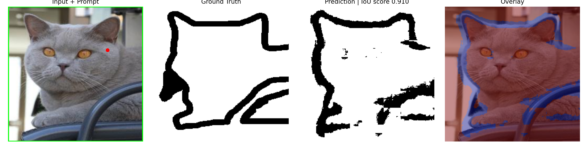

MiniSAM Results
MiniSAM was trained from scratch on the Oxford-IIIT Pet segmentation dataset. The model uses box and positive point prompts generated from ground-truth masks.
Final Training Summary
- Final train IoU: approximately 0.957
- Final validation IoU: approximately 0.888–0.890
- Training epochs: 120
- Input image size: 256 × 256
- Prompt types: box prompt + positive point prompt
Training Curves


Prediction Examples



Future Work and Next Improvements
MiniSAM is an educational SAM-style model. The current version already shows strong promptable segmentation performance on Oxford-IIIT Pet, but there are several useful directions for improving it further.
| Improvement | Why It Helps |
|---|---|
| Train with more prompt types | The current model uses box and positive point prompts. Adding negative points and previous-mask prompts would make the model more interactive. |
| Use stronger image augmentation | Color jitter, random scaling, rotation, blur, and crop augmentation can improve generalization. |
| Use a larger image encoder | Increasing encoder depth or using window attention can improve image representation quality. |
| Train on more datasets | Testing on other segmentation datasets would show whether MiniSAM generalizes beyond pet segmentation. |
| Add automatic mask generation | Sampling grid points across the image would allow MiniSAM to generate multiple object masks automatically, similar to SAM-style mask generation. |
| Add text-to-mask pipeline | Combining MiniSAM with an object detector or grounding model would allow text prompts to be converted into box prompts. |
Most Useful Next Experiment
The most useful next step is to add negative point prompts. This would allow the model to learn not only what region to include, but also what region to exclude.
\[
\text{Positive point} \rightarrow \text{include this object}
\]
\[
\text{Negative point} \rightarrow \text{exclude this region}
\]
This would make MiniSAM more similar to an interactive segmentation model.